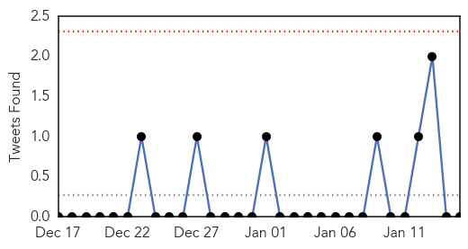

Unknown
30-Day Web Trend
0 alerts, 0 warnings

30-Day Twitter Trend
2 alerts, 0 warnings

Article Locations

Article Confidences
Top Articles:
- 0.997
- Flu vaccine not working well; only 23 percent effective
- 0.995
- Flu vaccine proves far less effective than usual
- 0.993
- California flu season “sporadic,” despite reports of severe flu projections
- 0.992
- Three older people in NKY have died of flu
- 0.989
- Experts “Guessed” Wrong Which Vaccine to Use In Fighting the Flu Virus this Season.
- 0.988
- Delaware Urges More to Get Flu Shot Amid Rising Cases
- 0.985
- UPDATED: Health Officials Report Rising Total of Flu Deaths in D
- 0.972
- Flu Cases Down in Kanawha County
- 0.969
- Major vesicular stomatitis outbreak no evidence of disease on the rise
- 0.964
- Deadly MERS virus spreads from camels to people only rarely
- 0.951
- Flu vaccine unaffected by virus mutations on the horizon
- 0.917
- Chicago Tribune
- 0.917
- Chicago Tribune
- 0.917
- Chicago Tribune
- 0.917
- Chicago Tribune
- 0.917
- Chicago Tribune
- 0.917
- Chicago Tribune
- 0.917
- Chicago Tribune
- 0.917
- Chicago Tribune
- 0.917
- Chicago Tribune
- 0.917
- Chicago Tribune
- 0.917
- Chicago Tribune
- 0.917
- Chicago Tribune
- 0.917
- Chicago Tribune
- 0.911
- Public Health Ministry launches diphtheria vaccination program
- 0.910
- The world windows to Thailand
- 0.896
- Mystery illness sickens kids across U.S.
- 0.892
- Bacterial infection shigellosis spikes in sections of Brooklyn
- 0.866
- Turkish PM says Israel's Netanyahu on par with Paris attackers
- 0.852
- This Year's Flu Vaccine Is Worse than We Thought
- 0.844
- Mysterious Disease Acute Flaccid Myelitis Sickening, Paralyzing Kids Across U.S.
- 0.827
- Ban reinstated on pig weigh-ins
- 0.824
- Officials: Over 1,000 Oklahomans have been hospitalized with the flu this season
- 0.807
- Hospitals fall short on government’s patient safety goal
- 0.806
- Health officials investigating illnesses reported at Opryland Ho
- 0.806
- Health officials investigating illnesses reported at Opryland Ho
- 0.806
- Health officials investigating illnesses reported at Opryland Ho
- 0.805
- More rheumatic fever cases reported
- 0.797
- HPV Experts: Vaccine Needs a Makeover
- 0.753
- Health department officials hope flu season waning in Tulsa
- 0.738
- 101st Airborne Division service members stick to standards, health practices in Liberia
- 0.730
- Traces of pesticides found in water systems, no public health threat
- 0.724
- JFC-UA service members stick to standards, health practices
- 0.696
- Health Department investigating illnesses at Opryland Hotel
- 0.694
- More effective treatments on the horizon for Parkinson's patients
- 0.694
- Newlywed Katie McQuestion Dies Of Sepsis After Getting Flu
- 0.672
- Campaign Promotes HPV Vaccine
- 0.636
- MSF breathes life into Gokwe North health care system
- 0.625
- Opryland hotel contacts health dept. after guests fall sick
- 0.576
- How to avoid bogus health information on the Internet
Showing top 50 articles...
Top Tweets:
-
No tweets found for Jan 15, 2015
Influenza
30-Day Web Trend
1 alerts, 0 warnings

30-Day Twitter Trend
0 alerts, 0 warnings

Article Locations

Article Confidences

Top Articles:
- 1.000
- DOD offers reminders of flu dangers
- 0.999
- Vaccinations lack efficiency in battling flu season strains nationally, locally
- 0.999
- The Marysville Advocate: News
- 0.999
- Flu hits hard in Iowa
- 0.998
- Death toll from flu in Delaware continues to climb
- 0.997
- Protect yourself from the flu
- 0.996
- North Carolina flu deaths increase to 90; vaccine only 23 percent effective
- 0.994
- Flu threat expected to continue
- 0.991
- Flu shot just 23 percent effective: US
- 0.991
- Flu shot just 23 percent effective
- 0.989
- CDC: Flu shot only 12 percent effective for adults
- 0.988
- HSE admits flu vaccine is for different strain than the one that has hit Ireland
- 0.987
- Province OKs 30 new patient beds to battle spread of influenza, jammed up emergency rooms
- 0.986
- CDC: Flu vaccine is only 23 percent effective this season
- 0.983
- Flu vaccine less effective this year
- 0.983
- More than three quarters of U.S. flu shots ineffective-report
- 0.983
- More than three quarters of U.S. flu shots ineffective-report
- 0.980
- Flu strain in Wisconsin contributes to at least 3 deaths
- 0.976
- Flu shot just 23 percent effective: US
- 0.962
- Number of flu cases to rise in the Midlands
- 0.950
- More than three-quarters of this year's flu shots were ineffective
- 0.945
- Mac researchers may have found a way to outsmart the flu virus
- 0.931
- New strain of flu which can BEAT vaccine on its way to Ireland
- 0.914
- Siouxland schools report low numbers of influenza cases
- 0.910
- One Punch to Knock Out the Flu
- 0.909
- Officials monitor flu outbreaks at Iowa care centers
- 0.903
- Mutant strain of flu virus latest threat to A&Es
- 0.896
- 'Single punch' universal flu vaccine comes closer to reality
- 0.889
- No new avian flu cases reported in province
- 0.887
- 'Single punch' universal flu vaccine comes closer to reality , AniNews.in
- 0.881
- Ozaukee County toddler is third flu-related death in Wisconsin
- 0.859
- A 26-Year-Old Newlywed Suddenly Died Days After Getting the Flu
- 0.843
- Could genetically engineered chickens reverse the avian flu epidemic?
- 0.771
- KATU.com - Portland News, Sports, Traffic Weather and Breaking News - Portland, Oregon
- 0.744
- Avian Flu Scan for Jan 15, 2015
- 0.708
- The Chosun Ilbo (English Edition): Daily News from Korea
- 0.652
- Vaccine offers less protection against flu
- 0.598
- Minister for Health warns flu outbreak to impact on trolleys
Top Tweets:
-
No tweets found for Jan 15, 2015